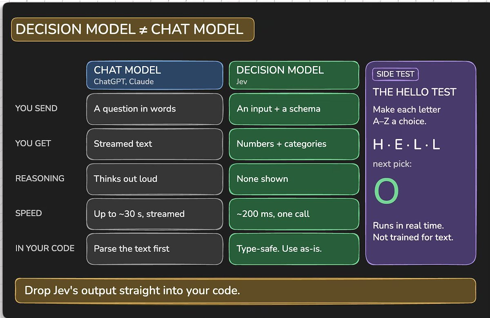
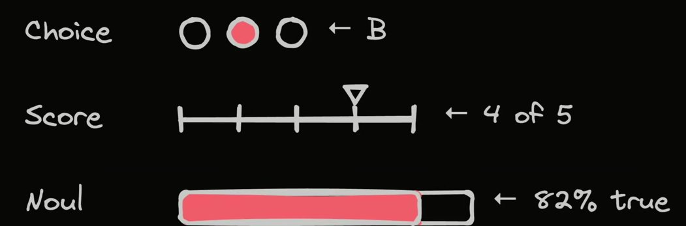
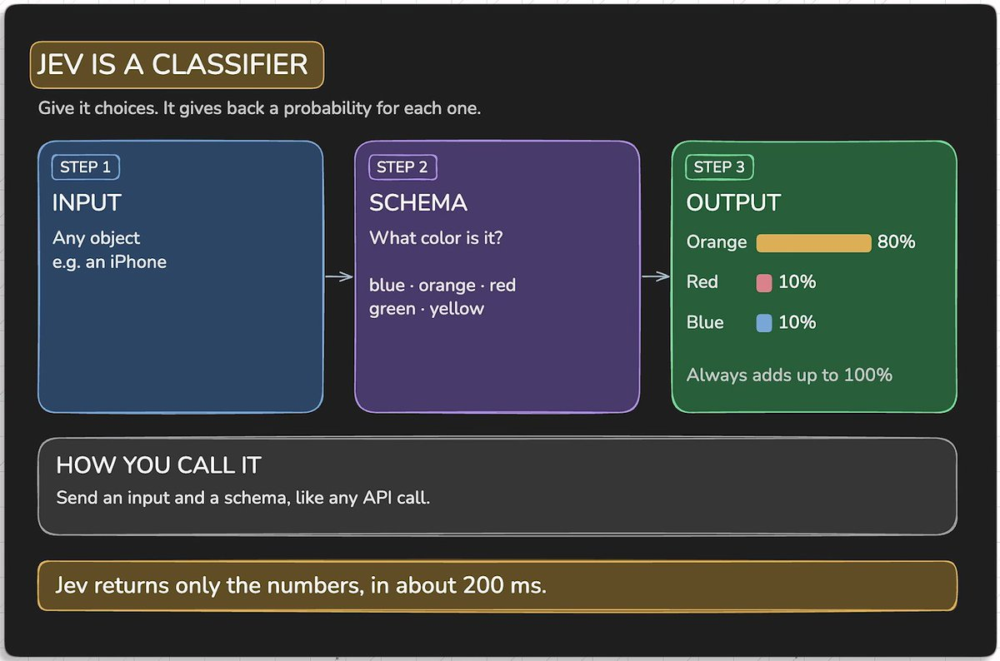
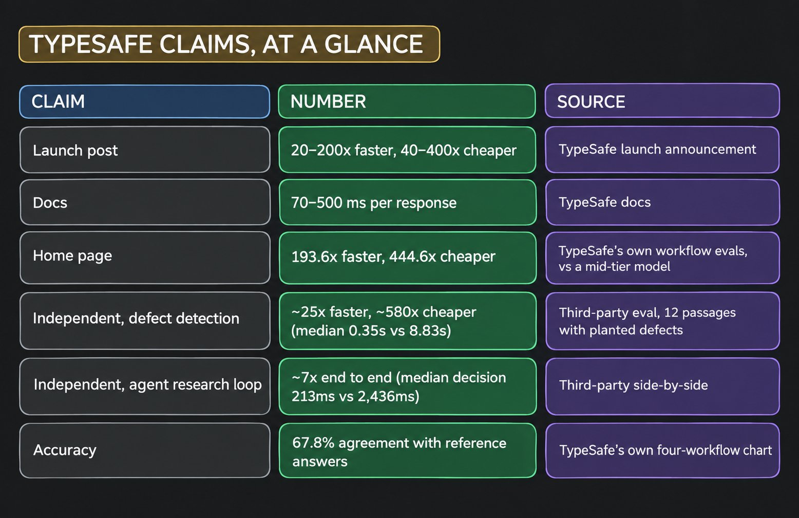
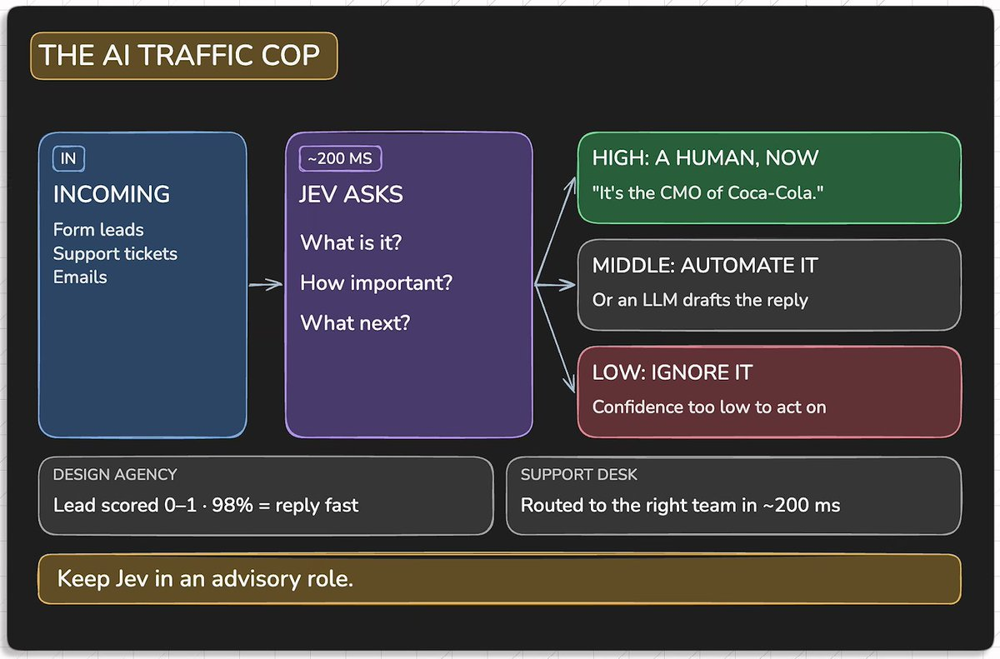
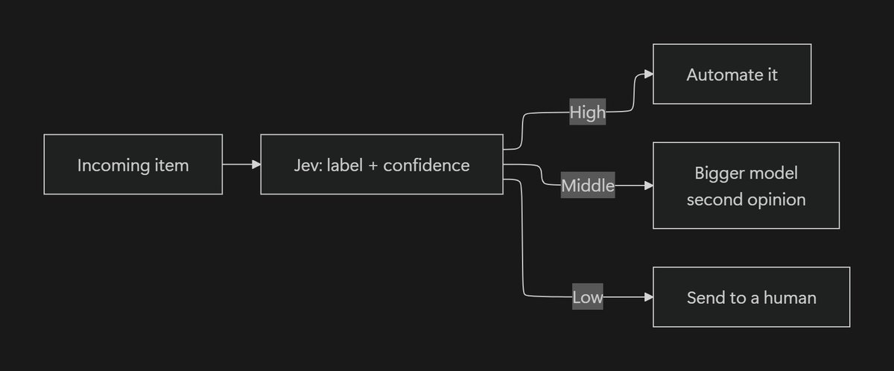
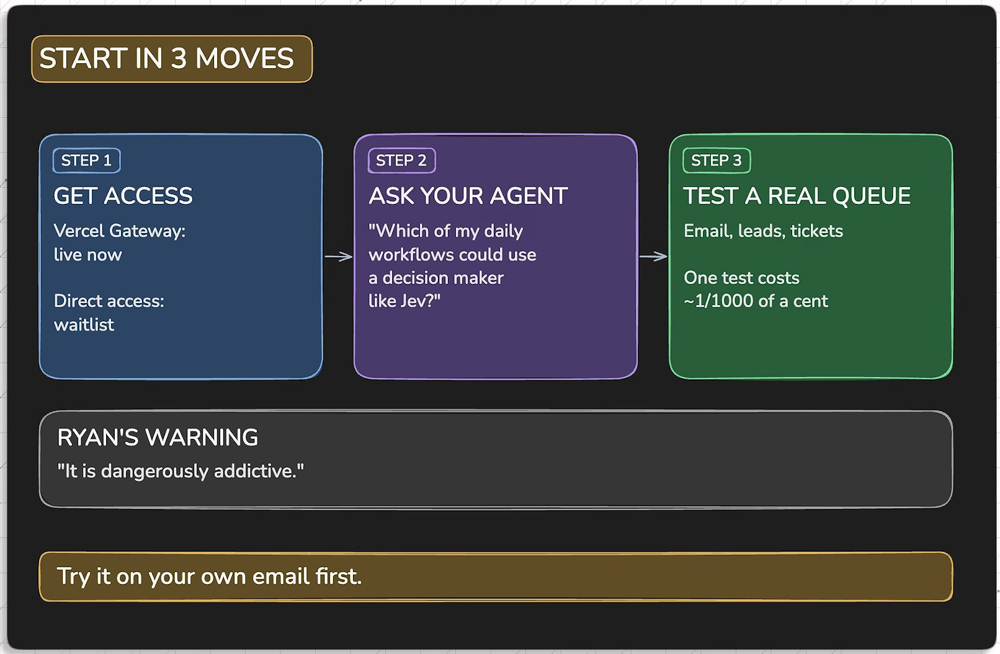

Jev是TypeSafe AI的System One模型：输入一段状态，输出一个带类型的判断，一个字都不写。它的输入价格是每百万token 0.042美元，输出不计费，速度比现有模型快40到100倍。
下面把它的三种输出格式、那些宣传数字该怎么读、置信度为什么才是真正的产品，以及四种已经有人在生产里跑起来的模式，依次说清楚。
为了搞清楚Jev到底是什么，我读了10多篇文章、看了5个小时的视频，然后把它们整理进了这一篇。
它不是聊天机器人，而是一种全新的AI：更像一个分类器，接收一段输入，然后用三种格式之一把答案送回来，不写长篇段落，速度比现有模型快40到100倍（比如ChatGPT、Claude这一类）。
每十亿输入token 42美元，输入价格比Claude Fable 5.1低238倍。
也就是说，在同样的时间线上它更便宜也更快，让你能规模化地搭建自己的AI产品。
但它不像过去的LLM聊天机器人那样，你给一条指令、它还你段落和文字；它允许你把原始状态直接丢给Jev，再提问，然后从三种格式里挑一种作为答案的形状。

这就是你需要了解的全部接口面。
1 Choice：从你定义的列表里挑一个选项，最多255个。适合做路由和分类。
2 Score：把输入放到你定义的刻度上打分。适合衡量紧急程度、质量和风险。
3 Noul：回答是或否，结果是一个0到1之间的数字。
每个答案都会带上概率和置信度，而且是带类型的。不用写JSON提示词，不需要解析器，也不会因为模型把对象裹进markdown代码块而重试。

一次真实的调用长这样。下面是一条发票纠纷进到客服收件箱的场景：
from typesafe_sdk import Choice, Noul, Score, TypeSafeClient
client = TypeSafeClient()
response = client.system_one(
state="I was charged twice for October. Same invoice number, two debits. Fix this today.",
questions={
"route": Choice(
instructions="Which team handles this",
criteria={
"billing": "Charges, refunds, invoices",
"technical": "Integration or API failures",
"sales": "Pricing and plan questions",
},
),
"severity": Score(
instructions="How badly this is hurting the customer",
criteria=["Minor annoyance", "Blocking their work", "Losing them money"],
),
"needs_human": Noul(
instructions="This requires a person, not an automated reply",
),
},
)三个问题，一次调用。同一次调用里的问题是并行评估的，所以问二十个问题的成本和问一个差不多。把你想知道的东西一次性问完；每次调用只问一个问题，是所有人都会犯的第一个错。
System One这个类名来自卡尼曼：快速而直觉，与每个推理模型都住在其中的那个缓慢、审慎的系统2相对。模型自己的名字不是这个来源，Jev取自19世纪经济学家William Stanley Jevons。
杰文斯悖论说的是：把一种资源变得极其便宜，人们不会因此省钱，反而会消耗得多得多。
这是一个论点，不是一个谐音梗。它押的不是你会用更低的成本跑完现在的AI负载，而是到了这个价格，你会开始做那些以前绝不会付钱给前沿模型去做的判断：每个检索块、每一行数据、每一次按键、每一帧画面。

在引用倍数之前，先看清基线。193.6倍这个数字，Vercel在自己的更新日志里也复述过，它来自TypeSafe对中等档位模型做的workflow评测，不是对前沿模型。

所以：当它只是一个大循环里的一个判断时是7倍，同等条件公平对比时是25倍，由厂商挑工作负载时是200倍。三个数字都是真的，你拿到哪一个，取决于你的延迟里有多大比例本来花在那个判断上。
准确率方面，Mike Taylor做的测试是目前公开过最干净的一个：七个植入的缺陷，Jev抓到六个；前沿模型七个全抓到，但花了25倍的时间。在TypeSafe自己的四工作流基准上，Jev得67.8%，与GPT-5.6 Terra持平，落后Sol和Opus 5几个点。
输入价格是每百万token 0.042美元，也就是开头那个每十亿42美元。Vercel的网关标价略低一点，大约0.04美元。
速度数字上了头条，但真正改变你架构的是输出免费。任何逐行或逐块运行的东西，以前都被价格挡在门外：对每个检索到的分块做一次LLM调用，是没人在检索阶段付得起的。现在给一个分块下一个判断的代价，比生成这个分块的向量检索还便宜。Michael Lee在分类、路由、意图识别和引导这几类任务上跑了大约5000次请求，花了大约两美元。
分类器给你一个标签，然后你得自己决定要不要信它，而你又没有任何可以拿来做决定的依据。
Jev给你标签，外加一个经过校准的数字，告诉你它有多确定。文档建议把低于0.3到0.5的结果，当成停下来找人、而不是照着行动的信号。
这就是快速分类器和决策层之间的差别。标签告诉它认为是什么，置信度告诉你允不允许照着它行动。没有置信度，你只能继续靠猜。

由此得出的模式是：

你的升级策略变成了配置文件里的一个数字，而不是系统提示词里的一段话。
所有让人眼前一亮的实现都是同一个形状：在代码里构造好选项集，再让Jev从里面挑。
浏览器智能体每一步都从DOM构造动作空间，Jev负责选下一次点击。
检索器照常取回分块，Jev负责删掉不该留的那些。
启动器给文件排序，Jev在每次按键时重新排序。
我不打算把所有案例都列出来，已经有很多清单在做这件事。下面这四种模式值得直接照搬，因为每一个都能推广。
把Jev放在你的模型集群前面，让它决定每个请求交给哪个大脑处理。
这是整个生态里被引用最多的用法，原因也很清楚：路由决定一直是请求里最便宜的那部分，却一直由技术栈里最贵的东西来做。
LangChain的Sydney Runkle把这个做成了中间件。
装上langchain-typesafe，配好TYPESAFE_API_KEY，你就得到一个ModelRouterMiddleware，可以配置具名选项和选择标准。概率会留在agent状态里，所以你能回溯一个请求为什么去了那个模型。
编程智能体撞上上下文上限时，会跑一个摘要提示词。把这个环节换成一趟Jev：给每个工具调用打一个相关性分数，把死重量丢掉。
Tamara Tran提出了这个思路，Alex Volkov把它做成Claude插件跑了一遍，把一次会话从接近一百万token压到86K，耗时大约一秒。
Diogo Almeida自己的反应是，这让编程智能体从围绕KV缓存做设计这件事里解脱出来。
如果这一点成立，上下文窗口就不再是你架构里必须绕开的约束。插件在github.com/tamaratran/fast-jev-compaction。
每个编程执行框架在自动模式放行之前，都会跑一个分类器问「这条命令真的该执行吗」。Guillermo Rauch的团队把Jev和他们当时在用的审查器做了对比，报告说p95延迟上快了最多18倍，而且更准。LangChain第二天就以AutoModeMiddleware的形式放出了开源版本。
想亲手感受一下的话，Gregor Zunic的浏览器智能体是第一个该抄的。每一步都是新的动作空间，状态就是DOM，小模型只在需要输入文字时才醒过来。在Google Flights上从苏黎世到伦敦，1倍速下用了7.073秒，花了0.0039美元。这个仓库公开了自己的测试方法，比大多数这类演示都诚实。
「Jev不会幻觉」这句话在发布文案里承担了很多工作，但它不对。
Jev无法输出非法类型，这是真的，所以它的输出能直接落进你的代码，不需要校验层。但它完全可以输出一个恰好合法、却是错误的值。类型安全不等于正确性。
在Hacker News的发布讨论帖里，一位评论者指出它本质上是分类模型而不是语言模型。Diogo Almeida同意这个判断，只对措辞有意见，说他更愿意称之为零样本而不是指令微调。也是在那条帖子里，「类型安全不等于正确性」这个反驳被认真论证过，在你把营销文案再复述一遍之前值得先读一读。
所以它是一个非常好的零样本分类器，带校准过的概率，跑在真正的API后面。比「一种新的智能」这个说法小得多，但仍然足以改变你构建的方式。
最好的描述来自一位把这些实践整理成清单的构建者：「AI if statement」，也就是AI版的if语句。三个词，比发布视频有用。
当你需要看到推理过程，或者合法答案的集合无法提前知道时，它是错的工具。如果与参考答案67.8% 的一致率在你眼里是失败而不是一种取舍，那就别把它放进关键路径。
Mike Taylor对用它做缺陷检查的结论是：这是一套早期预警系统，值得有，因为诚实的替代方案是根本不检查。把它跑在你以前什么都不跑的地方，在你已经有严格检查的地方保留那套检查。
拿到访问权。它已经在你用的网关后面：Vercel AI Gateway在上线48小时内接入，Cloudflare AI Gateway和OpenRouter同一周进入beta。直连是向api.typesafe.ai/v1/systemone发一个带bearer token的POST请求。

找到你的队列。找那种又贵又持续进来的东西：线索、工单、邮件、检索到的分块、工具调用。任何现在由人或者LLM慢慢做出的廉价判断。
在一百条真实数据上测。把所有问题放进一次调用里问完。用置信度设阈值，低于0.5的一律升级。跑一次测试的成本不到一美分。
然后把真正的精力花在评分体系上。选项集和问题措辞就是这份工作的全部。一位花了一周时间试图搞崩这个模型的构建者，最后的结论是：如果评分体系是错的，其他一切都不重要。API调用是琐碎的，分类体系才是工作。
把难想的和要写的留给大模型，把中间那些廉价的判断交给Jev。
发布说明：Almeida自己写的发布文章，包含评测和他主动交代的注意事项。
https://typesafe.ai/blog/introducing-system-one-models-and-jev
Vercel AI Gateway上的Jev：模型页面，带价格和playground。
https://vercel.com/ai-gateway/models/jev
Vercel的更新日志：用Vercel自己的口径复述了193.6倍更快和444.6倍更便宜这两个数字。
https://vercel.com/changelog/typesafe-ai-jev-now-available-on-ai-gateway
LangChain的《用Jev构建执行框架》：路由中间件的实现，含代码。
https://www.langchain.com/blog/building-a-harness-with-jev
Browser Use的超快智能体：Jev决定下一次点击，更小的模型负责输入文字。
https://github.com/browser-use/jev-ultrafast
性能记录：Google Flights上1倍速跑到7.073秒的实测，附方法论。
https://github.com/browser-use/jev-ultrafast/blob/main/docs/performance.md
快速压缩插件：给工具调用打分，大约一秒内丢掉已经死掉的上下文。
https://github.com/tamaratran/fast-jev-compaction
awesome-jev：社区目录。现在有三份互相竞争的清单，这份最全。
https://github.com/AnotiaWang/awesome-jev
awesome-jev-by-typesafe：参考文章里数star数用的那份清单。
https://github.com/Anil-matcha/awesome-jev-by-typesafe
Hacker News的发布讨论帖：「不会幻觉」这个反驳就是在这里被讨论的。
https://news.ycombinator.com/item?id=49717558
DataCamp的科普：适合看逐模型的准确率对比。
https://www.datacamp.com/blog/system-one-models-jev
宣传与证据对照指南：把厂商的说法和独立验证的结果分开。
https://agentpedia.codes/blog/jev-system-one-models
参考：https://x.com/manish_fp/status/2101325394532266139